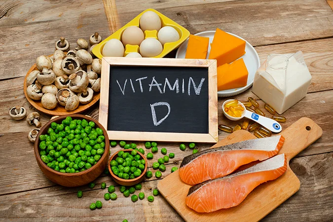

បច្ចុប្បន្ន និន្នាការនៃការយល់ដឹងផ្នែកសុខភាពមានការកើនឡើង។ ជាពិសេសការទទួលទានអាហារ និងអាហារបំប៉នវីតាមីន វីតាមីនដែលមនុស្សភាគច្រើននិយមទិញនិងយក ជាធម្មតាវាជាវីតាមីន C ។ ជួយពង្រឹងភាពស៊ាំ វីតាមីន B ជួយដល់ខួរក្បាល និងការចងចាំ វីតាមីន E សម្រាប់ស្បែកស្អាត ប៉ុន្តែវីតាមីន D ជាវីតាមីនដែលមនុស្សតិចណាស់គិតដល់។ ព្រោះខ្ញុំគិតថាការរស់នៅក្នុងប្រទេសត្រូពិចទទួលបានពន្លឺព្រះអាទិត្យគ្រប់គ្រាន់ហើយ។ ប៉ុន្តែជាមួយនឹងរបៀបរស់នៅរបស់មនុស្សទីក្រុងភាគច្រើនដែលតែងតែអង្គុយធ្វើការនៅក្នុងការិយាល័យ។ ពេលចេញក្រោមពន្លឺថ្ងៃ ត្រូវស្លៀកសម្លៀកបំពាក់ដែលគ្របខ្លួន។ រួមទាំងការប្រើឡេការពារកម្តៅថ្ងៃ។ ជាលទ្ធផល អ្នកទីក្រុងភាគច្រើនខ្វះវីតាមីន D ដោយមិនដឹងខ្លួន។
យោងតាមការស្រាវជ្រាវដែលបានចេញផ្សាយនៅក្នុងកាសែត Bangkok Medical Journal ក្នុងឆ្នាំ 2015 ការប្រមូលទិន្នន័យបុគ្គលិកការិយាល័យពី 211 ការិយាល័យនៅទូទាំងទីក្រុងបាងកក បានរកឃើញថា 36.5% ឬរៀងរាល់ 1 ក្នុងចំណោម 3 បុគ្គលិកការិយាល័យគឺខ្វះវីតាមីន D ។ លើសពីនេះ មនុស្សមួយក្រុមមានហានិភ័យខ្ពស់នៃកង្វះវីតាមីន D ជាងប្រជាជនទូទៅ ដូចជាអ្នកដែលមានស្បែកខ្មៅងងឹត អ្នកជំងឺវ័យចំណាស់ អ្នកជំងឺតម្រងនោម និងអ្នកជំងឺដែលមានជំងឺថ្លើម និងអ្នកដែលលើសទម្ងន់ (ធាត់ អ្នកជំងឺ)
 សារៈសំខាន់នៃវីតាមីនឌី
សារៈសំខាន់នៃវីតាមីនឌីបន្ថែមពីលើវីតាមីន D មុខងារចម្បងរបស់វាគឺជួយស្រូបយកជាតិកាល់ស្យូម។ ជួយពង្រឹងឆ្អឹង និងការពារឆ្អឹងស្តើង (Osteopenia) និងជំងឺពុកឆ្អឹង។ (Osteoporosis) វីតាមីន D ក៏មានលក្ខណៈសម្បត្តិពិសេសជាច្រើនដែលមនុស្សជាច្រើនប្រហែលមិនដឹងនោះគឺវីតាមីន D មានរចនាសម្ព័ន្ធស្រដៀងនឹងអ័រម៉ូនភេទ។ ដូច្នេះហើយ វាដើរតួនាទីយ៉ាងសំខាន់ក្នុងការគ្រប់គ្រងដំណើរការសំខាន់ៗផ្សេងៗក្នុងរាងកាយ ដូចជាជួយកាត់បន្ថយអរម៉ូនប៉ារ៉ាទីរ៉ូអ៊ីត (Parathyroid Hormone) និងការពារការបាត់បង់ជាតិកាល់ស្យូមពីឆ្អឹង។ បង្កើនការបញ្ចេញអរម៉ូនអាំងស៊ុយលីន (Insulin) ជួយរក្សាតុល្យភាពជាតិស្ករក្នុងឈាម និងការពារជំងឺទឹកនោមផ្អែម។
តាមការសិក្សាបានរកឃើញថា មនុស្សដែលខ្វះវីតាមីន D គឺមានហានិភ័យខ្ពស់នៃការវិវត្តទៅជាជំងឺទឹកនោមផ្អែមប្រភេទទី 2 ជាងមនុស្សទូទៅ ហើយការបន្ថែមវីតាមីន D ធ្វើអោយប្រសើរឡើងនូវសមត្ថភាពរបស់រាងកាយក្នុងការរំលាយអាហារជាតិស្ករ (Glucose Metabolism) ។ វីតាមីន D ក៏ត្រូវបានផ្សារភ្ជាប់ទៅនឹងជំងឺលើសឈាមផងដែរ។ (លើសឈាម) និងជំងឺសរសៃឈាមបេះដូង (ជំងឺសរសៃឈាមបេះដូង) ផងដែរ។
 លើសពីនេះ វីតាមីន D ក៏មានតួនាទីសំខាន់ក្នុងការជំរុញប្រព័ន្ធការពាររាងកាយ (Immune System) ត្រូវបានគេរកឃើញថា វីតាមីន D Receptor ឬ receptor ដែលភ្ជាប់ទៅនឹងវីតាមីន D នៅលើកោសិកា T និង B ដែលជាកោសិកាឈាមសដែលទទួលខុសត្រូវ។ សម្រាប់កម្ចាត់វត្ថុបរទេសដែលគំរាមកំហែងដល់រាងកាយដូចជា បាក់តេរី មេរោគ កោសិកាមហារីក បច្ចុប្បន្ននេះមានការស្រាវជ្រាវជាច្រើនដែលគាំទ្រការបន្ថែមវីតាមីន D ដើម្បីជួយប្រឆាំងនឹងជំងឺមហារីកផ្សេងៗដូចជាមហារីកពោះវៀនធំ មហារីកសុដន់ និងមហារីកក្រពេញ។ ជំងឺមហារីកក្រពេញប្រូស្តាត
វីតាមីន D ជួយឱ្យខួរក្បាលបញ្ចេញសារធាតុ serotonin កាន់តែច្រើន ដែលវាជួយកាត់បន្ថយភាពតានតឹង និងការធ្លាក់ទឹកចិត្តផងដែរ។ វីតាមីន D ជួយក្នុងការបែងចែកកោសិកា (Cell Proliferation) និងការបង្កើតកោសិកាដើម្បីជួសជុលផ្នែកផ្សេងៗដែលពាក់ និងរហែក ជួយពន្យារភាពចាស់នៃស្បែក (Delay Skin Aging) វីតាមីន D ក៏ប៉ះពាល់ដល់ការហាត់ប្រាណ និងកីឡាផងដែរ។ ជាពិសេសការលេងកីឡាដែលមានភាពតានតឹង និងបន្តបន្ទាប់គ្នាក្នុងរយៈពេលយូរហៅថា Endurance Sports ដូចជា រត់ចម្ងាយឆ្ងាយ ជិះកង់ (Cycling) ទ្រីយ៉ាត្លុង (Triathlon)។